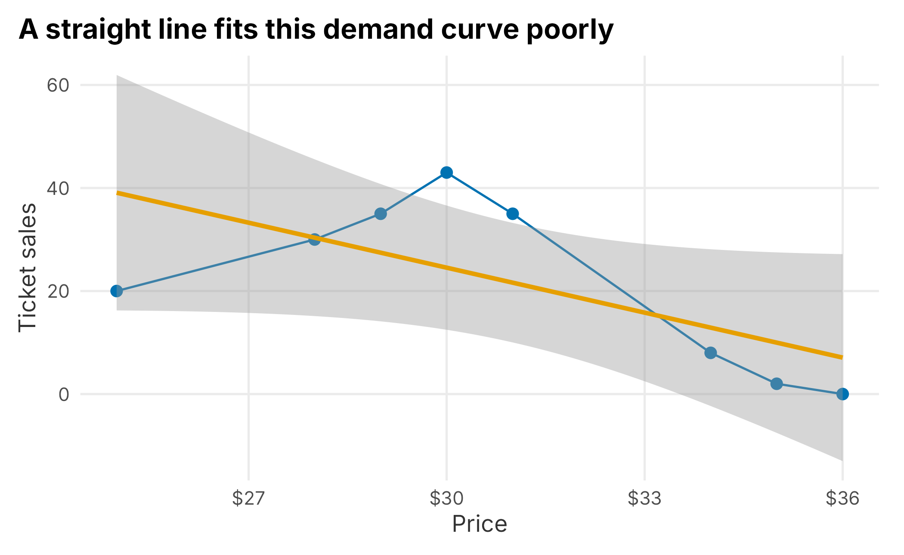
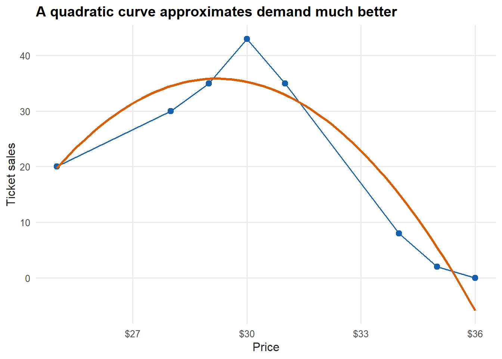
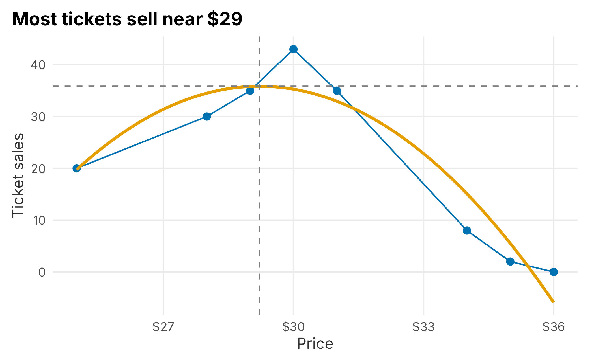
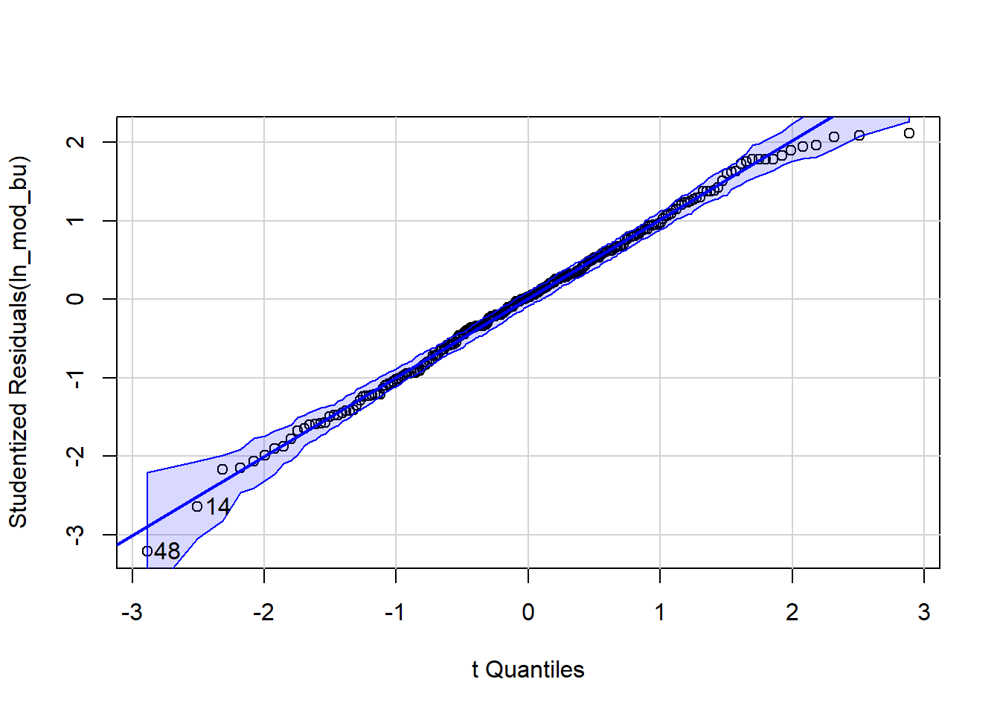
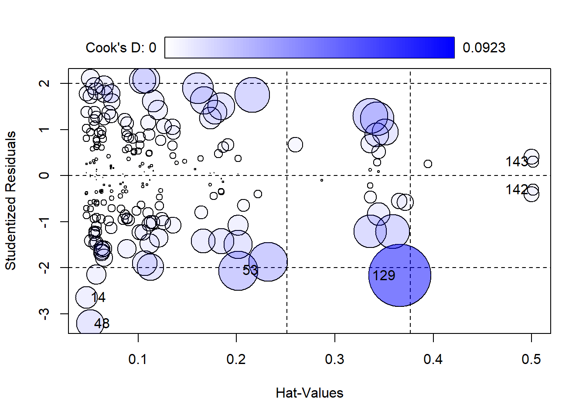
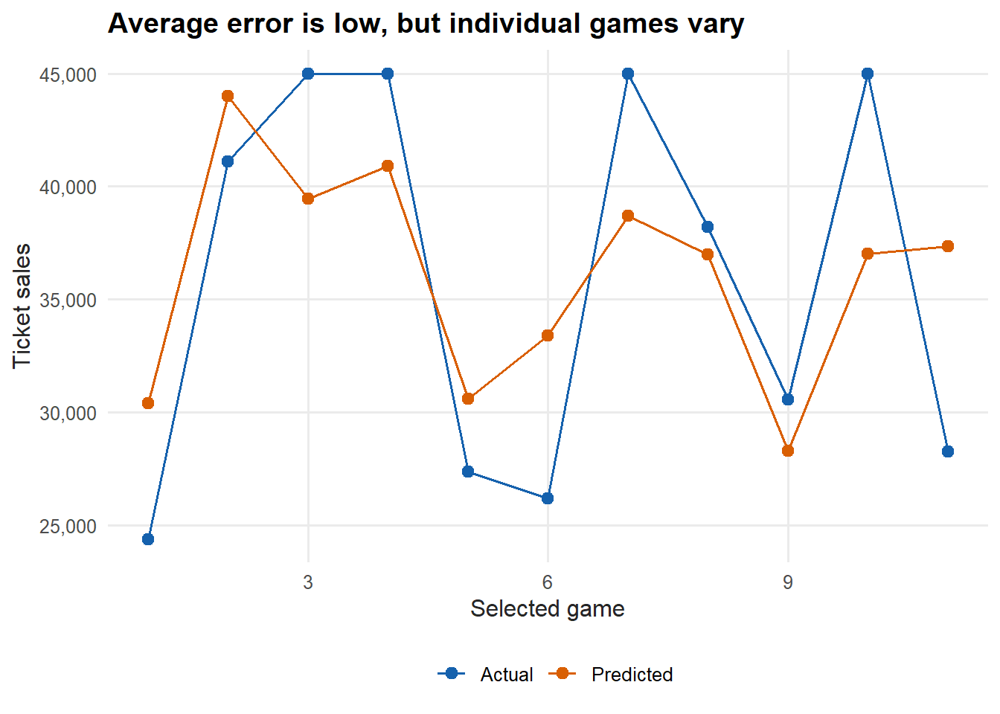
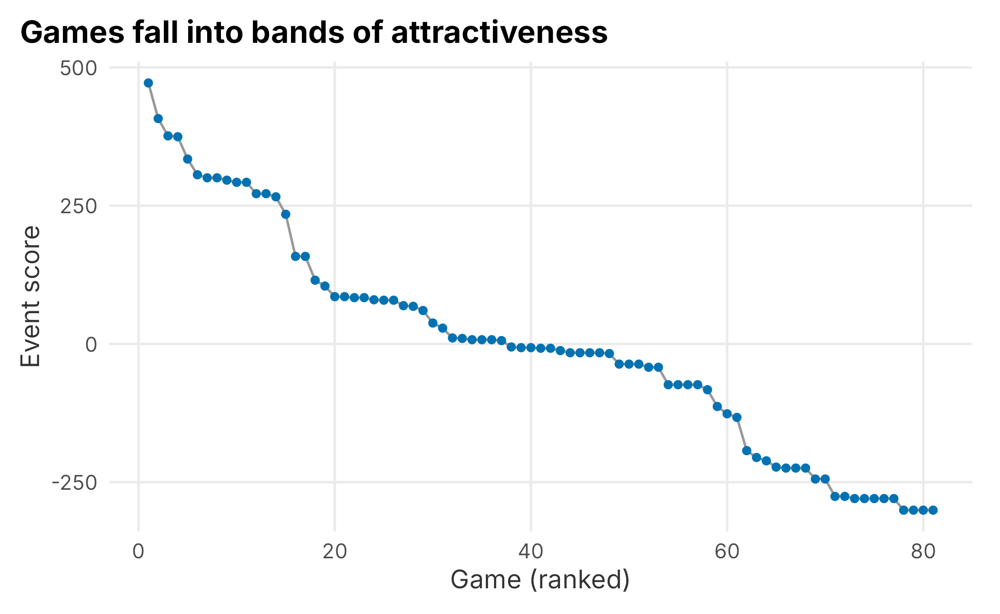
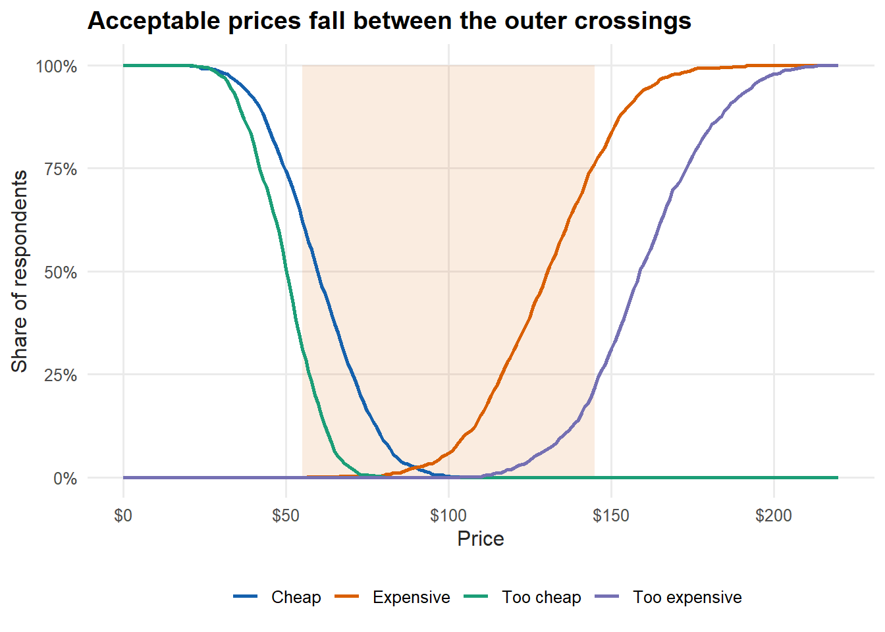

6 Pricing and forecasting
Like segmentation, pricing could fill a book on its own. It touches willingness to pay, arbitrage, cannibalization, margins, marketing channels, the product suite, brand, and competing internal goals. This chapter follows the segmentation chapter on purpose: pricing is dynamic, and the value of a product changes with who wants it and when. But pricing is often not deliberate at all. Robert Phillips puts it well in Pricing and Revenue Optimization (Phillips 2005):
“In many cases, the prices charged to customers are the result of a large number of uncoordinated and arbitrary decisions.”
— Robert L. Phillips
That is true more often than anyone likes to admit. Price is a core part of the marketing mix, but how it interacts with promotions and other efforts is rarely well understood (we return to this in Chapter 8). Brand sits underneath all of it. Marketers reach for lower prices as a blunt instrument to move tickets, which can backfire over time — and the impulse is backwards: lower prices do the least when a team is losing, and there is little pressure to cut them when a team is winning. Your brand is shaped by price, and because season-ticket holders are central to managing risk, anything that erodes their perceived value deserves scrutiny.
This chapter walks through a simplified, practical version of how you might set prices and forecast sales, and the reasoning behind each step. We are going knee-deep in a very deep ocean.
6.1 Understanding your inventory
How do you value a ticket? Start with the inventory. There are several ticket classes, customers cross between them, and the available supply is fluid. If your goal is maximum revenue, selling more season tickets can actually lower revenue, because they sell at a discount — there is a tipping point. Some inventory is inefficient to discount on certain games; you would not put group discounts on opening day. The major classes are:
- Season tickets
- Group tickets
- Small plans
- Single-game tickets
- Subscription tickets
Tickets also reach fans through several channels, and channel control is central to pricing. Think of airlines: tight control of their channels enables very fine-grained pricing. Typical ticketing channels are:
- Primary channels — directly through the team or league, through consignment, or through a platform such as Ticketmaster
- Secondary channels — resale marketplaces such as SeatGeek and StubHub
Secondary channels are more complicated because professional brokers may hold a large share of the inventory, and that inventory may not trade in a fully liquid market. Brokers buy and sell event tickets, generally with one of two strategies:
- Scale — buy cheap inventory in volume and make money on marquee events where demand far outstrips supply (prime weekend opponents, playoff games).
- Margin — buy good inventory and hold strong margins. This takes time and makes a broker more visible to the team.
Many clubs now share revenue with brokers and use them as another way to move single-game tickets on the secondary market, or to flatten their markets. Selling to brokers mitigates risk — you get cash early for operations — but there is a trade-off: you lose control of the channel. Imagine if airline tickets sold mostly through resale; airlines could not price nearly as well. Service becomes a problem too. If a fan’s ticket does not work, who fixes it? That becomes a brand problem. Digital ticketing has eased some of this, but it persists, and the ticketing platform sets technical limits on what you can do.
On top of class and channel, prices vary by location. Premium areas may include food and beverage, club access, and in-seat service. Some seats are shaded; some face the setting sun; some sit near a preferred entrance, parking, or food. Distance from the field matters both experientially and perceptually. Not every factor needs a price, but many should have one. Stratifying the product is how you capture revenue across the full range of customer expectations.
So how do you find willingness to pay? You usually have history: what people paid for past events, and how many sold at each price for each class and location. That history is the raw material for the rest of this chapter. Other signals are harder to capture. A venue can have dozens or hundreds of price levels, which is where cannibalization matters — raising the price in one section can shift demand to another, and the cross-price elasticity between sections is not trivial to estimate. Techniques like linear programming 26 can help manage it.
Inventory control is easy to overlook and shouldn’t be. You may know seven dugout seats sold against the Brewers on a Saturday in July, but not that other seats were on hold, or how many were listed on the secondary market. Sales incentives can quietly distort inventory control too — a rep may hold seats for a group goal. Before any pricing exercise, understand how inventory is actually allocated.
6.2 Understanding pricing mechanisms
Pricing often starts with a goal that cannot fully be met:
Sell every available ticket at the highest possible price to maximize revenue.
Is selling 10 tickets at $100 the same as selling 100 at $10? Both make $1,000, but the answer depends on whom you ask and what else you care about. To get quantitative, we use price-response functions, which are genuinely enjoyable to work with. As Pricing Segmentation and Analytics notes (Tudor Bodea 2012):
“The most useful feature of price-response functions is that, once estimated, they can be used to determine the price sensitivity of a product, or how demand will change in response to a change in price.”
— Ferguson and Bodea
What does one look like? Suppose you sold tickets in one section at several prices and recorded the results.
prf_data <- tibble::tibble(
sales = c(20, 30, 35, 43, 35, 8, 2, 0),
price = c(25, 28, 29, 30, 31, 34, 35, 36)
)
ggplot(prf_data, aes(x = price, y = sales)) +
geom_point(size = 2.5, color = plot_palette[1]) +
geom_line(color = plot_palette[1]) +
geom_smooth(method = "lm", formula = y ~ x, se = TRUE, color = plot_palette[2]) +
scale_x_continuous(labels = scales::dollar) +
labs(x = "Price", y = "Ticket sales",
title = "A straight line fits this demand curve poorly") +
book_theme
Figure 6.1: Linear price-response function
A straight line clearly will not forecast sales well here, and we can see diminishing returns setting in as price rises. The chart also hides a lot: we are pretending these are single-game tickets for one section, and ignoring when they sold, through which channel, and what inventory was available. With that caveat, common price-response forms include:
Linear:
\[\begin{equation} d(p) = D - m \cdot p \end{equation}\]
Exponential:
\[\begin{equation} d(p) = C \cdot p^{\epsilon} \end{equation}\]
Logit:
\[\begin{equation} d(p) = \frac{C \cdot e^{a + b p}}{1 + e^{a + b p}} \end{equation}\]
The data does not look linear, constant, or logit-shaped, so let’s try a simple second-degree polynomial.
ggplot(prf_data, aes(x = price, y = sales)) +
geom_point(size = 2.5, color = plot_palette[1]) +
geom_line(color = plot_palette[1]) +
stat_smooth(method = "lm", formula = y ~ poly(x, 2),
se = FALSE, color = plot_palette[2]) +
scale_x_continuous(labels = scales::dollar) +
labs(x = "Price", y = "Ticket sales",
title = "A quadratic curve approximates demand much better") +
book_theme
Figure 6.2: Polynomial price-response function
The curve fits well enough. We are not hunting for the perfect fit; we want something usable. We feed a polynomial to lm and build a small function that returns modeled sales for any price.
fit <- lm(sales ~ poly(price, 2, raw = TRUE), data = prf_data)
f_get_sales <- function(new_price) {
b <- coef(fit)
b[[1]] + b[[2]] * new_price + b[[3]] * new_price^2
}This deliberately overfits eight points, which is fine for the demonstration. The model is just a rearranged quadratic. A simple line takes the familiar form:
\[\begin{equation} y = m x + b \end{equation}\]
Adding a squared term gives us the curve:
\[\begin{equation} f(x) = b + m_1 x + m_2 x^2 \end{equation}\]
A useful way to think about regression is that each added term bends the line. Now we can apply the function to the original prices and compare.
old_prices <- prf_data$price
comparison <- tibble::tibble(
price = old_prices,
actual_sales = prf_data$sales,
estimated_sales = f_get_sales(old_prices),
difference = prf_data$sales - f_get_sales(old_prices)
)| price | actual_sales | estimated_sales | difference |
|---|---|---|---|
| 25 | 20 | 19.75 | 0.25 |
| 28 | 30 | 34.50 | -4.50 |
| 29 | 35 | 35.80 | -0.80 |
| 30 | 43 | 35.28 | 7.72 |
| 31 | 35 | 32.95 | 2.05 |
| 34 | 8 | 15.09 | -7.09 |
| 35 | 2 | 5.51 | -3.51 |
| 36 | 0 | -5.88 | 5.88 |
We can feed it any price. How many sales would we expect at $26?
f_get_sales(26)## [1] 26.48114The function also lets us find the top of the curve — the price that maximizes the number of tickets sold. The fitted equation is:
\[\begin{equation} f(x) = -737.366 + 52.934\,x - 0.906\,x^2 \end{equation}\]
The maximum is where the derivative is zero. For a quadratic that is simply \(x = -m_1 / (2 m_2)\), so we never have to leave R.
co <- coef(fit)
optimal_price <- -co[[2]] / (2 * co[[3]])
optimal_sales <- f_get_sales(optimal_price)
c(optimal_price = optimal_price, optimal_sales = optimal_sales)## optimal_price optimal_sales
## 29.21398 35.83951The peak sits at about $29.21, where the model predicts roughly 35.8 tickets. (If calculus is rusty, a math engine such as WolframAlpha 27 will take the derivative for you, and for whole-number prices over a small range you could just search the values directly.)
ggplot(prf_data, aes(x = price, y = sales)) +
geom_point(size = 2.5, color = plot_palette[1]) +
geom_line(color = plot_palette[1]) +
stat_smooth(method = "lm", formula = y ~ poly(x, 2),
se = FALSE, color = plot_palette[2]) +
geom_hline(yintercept = optimal_sales, linetype = 2, color = "grey50") +
geom_vline(xintercept = optimal_price, linetype = 2, color = "grey50") +
scale_x_continuous(labels = scales::dollar) +
labs(x = "Price", y = "Ticket sales",
title = "Most tickets sell near $29") +
book_theme
Figure 6.3: The revenue-relevant peak of the curve
Selling the most tickets is not the same as making the most money. What does revenue look like across the price range?
estimated_prices <- 25:35
estimated_revenue <- tibble::tibble(
price = estimated_prices,
sales = f_get_sales(estimated_prices),
revenue = f_get_sales(estimated_prices) * estimated_prices,
cumulative_tickets = rev(cumsum(rev(f_get_sales(estimated_prices))))
) |>
mutate(single_price_revenue = price * cumulative_tickets)| price | sales | revenue | cumulative_tickets | single_price_revenue |
|---|---|---|---|---|
| 25 | 19.8 | 493.8 | 288.4 | 7210.5 |
| 26 | 26.5 | 688.5 | 268.7 | 6985.4 |
| 27 | 31.4 | 847.8 | 242.2 | 6539.1 |
| 28 | 34.5 | 966.1 | 210.8 | 5902.1 |
| 29 | 35.8 | 1038.1 | 176.3 | 5112.3 |
| 30 | 35.3 | 1058.4 | 140.5 | 4214.6 |
| 31 | 32.9 | 1021.4 | 105.2 | 3261.4 |
| 32 | 28.8 | 921.8 | 72.3 | 2312.3 |
| 33 | 22.9 | 754.2 | 43.5 | 1433.9 |
| 34 | 15.1 | 513.0 | 20.6 | 700.3 |
| 35 | 5.5 | 192.8 | 5.5 | 192.8 |
cumulative_tickets assumes you sell every ticket priced at or above the current level. single_price_revenue is what you would earn if you set one price and sold all of that demand at it. Read that way, a single price of $25 looks best — it sells the most tickets and earns the most at one price. But if you could charge each level its own price and sell the modeled demand at every step, total revenue is higher:
sum(estimated_revenue$revenue)## [1] 8495.97That gap is the entire argument for variable and dynamic pricing. It also depends on the assumptions we made, and the picture changes the moment other constraints enter. If season-ticket holders already pay $29, a single-game price of $25 creates a brand problem. And when inventory is limited, these choices become more discrete.
6.3 Basics of forecasting
Forecasting underpins pricing, and it can get very sophisticated. We will stay practical and focus on how to think about it. The FOSBAAS package can build seasons of simulated schedule-and-sales data with f_build_season; the seeds and arguments let you create different conditions. We will build three past seasons.
season_2022 <- FOSBAAS::f_build_season(
seed1 = 3000, season_year = 2022, seed2 = 714, num_games = 81,
seed3 = 366, num_bbh = 5, num_con = 3, num_oth = 5,
seed4 = 309, seed5 = 25, mean_sales = 29000, sd_sales = 3500)
season_2023 <- FOSBAAS::f_build_season(
seed1 = 755, season_year = 2023, seed2 = 4256, num_games = 81,
seed3 = 54, num_bbh = 6, num_con = 4, num_oth = 7,
seed4 = 309, seed5 = 25, mean_sales = 30500, sd_sales = 3000)
season_2024 <- FOSBAAS::f_build_season(
seed1 = 2892, season_year = 2024, seed2 = 714, num_games = 81,
seed3 = 366, num_bbh = 9, num_con = 2, num_oth = 6,
seed4 = 6856, seed5 = 2892, mean_sales = 32300, sd_sales = 2900)
past_season <- rbind(season_2022, season_2023, season_2024)| gameNumber | team | date | dayOfWeek | month | weekEnd | |
|---|---|---|---|---|---|---|
| 238 | 76 | FLA | 2024-09-22 | Sun | Sep | FALSE |
| 239 | 77 | FLA | 2024-09-23 | Mon | Sep | FALSE |
| 240 | 78 | FLA | 2024-09-24 | Tue | Sep | FALSE |
| 241 | 79 | LAA | 2024-10-04 | Fri | Oct | TRUE |
| 242 | 80 | LAA | 2024-10-05 | Sat | Oct | TRUE |
| 243 | 81 | LAA | 2024-10-06 | Sun | Oct | FALSE |
This section goes a little deeper into regression. If you want to do this for real, buy a book on it — a practical favorite is An R Companion to Applied Regression by Fox and Weisberg (John Fox 2019). You will need to be comfortable with terms like hypothesis testing, normality, independence, linearity, validation, homoskedasticity, autocorrelation, multicollinearity, interaction terms, and transformations. Working with sports data, you often live in a non-parametric world where rank order matters and the textbook assumptions are not fully met. We are not running a clinical trial, so we will hit the high points and move on — but you should know how deep the water gets.
There are two broad approaches:
- Top-down forecasts use macro factors such as team payroll and projected wins, useful for comparing potential across a whole league.
- Bottom-up forecasts use specific inputs such as the marketing schedule and game attractiveness in your market — rivalry games, for instance.
We will build a bottom-up forecast. First, split the data into training and test sets so we can evaluate the model honestly rather than scoring it on the data it learned from.
set.seed(715)
test_rows <- sample(seq_len(nrow(past_season)),
size = round(0.05 * nrow(past_season)))
train <- past_season[-test_rows, ]
test <- past_season[test_rows, ]Now fit a simple linear model on the training data. Why these variables? Variable selection can be involved, and the goal is a parsimonious model — the simplest one that captures the most variance. For now we pick a few reasonable predictors. Remember that this is mixed data; most regression tutorials use clean, normally distributed numbers, which you rarely get in the wild.
ln_mod_bu <- lm(
ticketSales ~ promotion + daysSinceLastGame + schoolInOut + weekEnd + team,
data = train
)The full summary looks like this:
##
## Call:
## lm(formula = ticketSales ~ promotion + daysSinceLastGame + schoolInOut +
## weekEnd + team, data = train)
##
## Residuals:
## Min 1Q Median 3Q Max
## -12147.0 -2555.2 111.6 2409.9 8090.0
##
## Coefficients:
## Estimate Std. Error t value Pr(>|t|)
## (Intercept) 32146.89 2981.05 10.784 < 2e-16 ***
## promotionconcert -1918.16 1690.76 -1.134 0.257931
## promotionnone -4144.44 1007.42 -4.114 5.66e-05 ***
## promotionother -3280.15 1394.65 -2.352 0.019637 *
## daysSinceLastGame 285.05 44.06 6.470 7.25e-10 ***
## schoolInOutTRUE 4377.39 1043.31 4.196 4.07e-05 ***
## weekEndTRUE 6869.37 617.40 11.126 < 2e-16 ***
## teamATL 3736.08 3048.48 1.226 0.221793
## teamBAL 3753.91 2963.19 1.267 0.206669
## teamBOS 11659.75 3691.12 3.159 0.001827 **
## teamCHC 12523.38 3627.72 3.452 0.000677 ***
## teamCIN 3930.39 3281.87 1.198 0.232473
## teamCLE 2251.84 2962.52 0.760 0.448076
## teamCOL 3711.93 3322.88 1.117 0.265286
## teamCWS 4451.79 3037.94 1.465 0.144367
## teamDET 3246.65 3323.77 0.977 0.329838
## teamFLA 3081.54 2976.28 1.035 0.301735
## teamHOU 9720.20 3026.20 3.212 0.001534 **
## teamKAN 5048.86 3796.86 1.330 0.185101
## teamLAA 8598.82 2935.38 2.929 0.003787 **
## teamLAD 12190.43 3255.50 3.745 0.000236 ***
## teamMIN 2207.90 3791.97 0.582 0.561043
## teamNYM 9010.54 3085.41 2.920 0.003893 **
## teamOAK 3794.65 3777.43 1.005 0.316311
## teamPHI 8987.97 4018.36 2.237 0.026398 *
## teamSF 9303.22 3810.98 2.441 0.015501 *
## teamTB 3465.27 3223.73 1.075 0.283689
## teamTEX 4852.09 3125.30 1.553 0.122103
## teamWAS 1987.36 3105.09 0.640 0.522876
## ---
## Signif. codes: 0 '***' 0.001 '**' 0.01 '*' 0.05 '.' 0.1 ' ' 1
##
## Residual standard error: 3968 on 202 degrees of freedom
## Multiple R-squared: 0.6298, Adjusted R-squared: 0.5785
## F-statistic: 12.27 on 28 and 202 DF, p-value: < 2.2e-16A quick guide to that output:
- Estimate — the coefficients in the fitted equation.
- Std. Error — roughly how far the estimates typically fall from the line.
- t value — the estimate divided by its standard error.
- Pr(>|t|) — the p-value; how confident we are the variable matters.
- Residual standard error — bigger means a less useful model.
- Multiple R-squared — the share of variance the model explains.
- F-statistic — whether the model as a whole is meaningful.
This model explains about 63% of the variance in ticket sales. Is that good? Probably not, especially given the standard error. We will pull a few key statistics into a tidy table so we can compare models as we go.
model_stats <- function(model) {
s <- summary(model)
tibble::tibble(
residual_se = s$sigma,
r_squared = s$r.squared,
adj_r_squared = s$adj.r.squared,
f_stat = s$fstatistic[[1]]
)
}| residual_se | r_squared | adj_r_squared | f_stat |
|---|---|---|---|
| 3967.573 | 0.63 | 0.578 | 12.274 |
OLS regression makes assumptions about the underlying data, and when they are violated the model can mislead you. The car package (Fox et al. 2021) has good tools for checking them. We will look at a few.
6.3.1 Outliers and unusual points
Regression is sensitive to extreme points — a rainout, a runaway promotion. Sometimes it is right to remove them.
library(car)
car::outlierTest(ln_mod_bu)## No Studentized residuals with Bonferroni p < 0.05
## Largest |rstudent|:
## rstudent unadjusted p-value Bonferroni p
## 48 -3.215013 0.0015199 0.35109The test reports the single most extreme observation, but its Bonferroni-adjusted p-value is well above 0.05, so it is not actually a significant outlier. That is a useful reminder: “most extreme” is not the same as “problematic.” A Q-Q plot checks the normality assumption against a 95% confidence envelope.
qq <- car::qqPlot(ln_mod_bu, main = "")
Figure 6.4: Q-Q plot of the model residuals
Most points fall along the line, with a few strays. An influence plot combines several diagnostics: the bigger the bubble, the larger the Cook’s distance — a measure of how much a single point pulls the model.
influential <- car::influencePlot(ln_mod_bu)
Figure 6.5: Influence plot for the model
| StudRes | Hat | CookD | |
|---|---|---|---|
| 14 | -2.645 | 0.047 | 0.012 |
| 48 | -3.215 | 0.051 | 0.018 |
| 53 | -2.063 | 0.202 | 0.037 |
| 129 | -2.174 | 0.366 | 0.092 |
| 142 | -0.304 | 0.501 | 0.003 |
| 143 | 0.304 | 0.501 | 0.003 |
Several points carry outsized influence. It can be reasonable to drop them if an outside factor we are not modeling — weather, say — explains them. We will remove exactly the points the influence plot flagged and refit, keeping everything reproducible by using the row labels the plot returned rather than hand-picking numbers.
train_clean <- train[!rownames(train) %in% rownames(influential), ]
ln_mod_clean <- lm(
ticketSales ~ promotion + daysSinceLastGame + schoolInOut + weekEnd + team,
data = train_clean
)| residual_se | r_squared | adj_r_squared | f_stat |
|---|---|---|---|
| 3756.14 | 0.648 | 0.6 | 13.451 |
Removing them gives only a modest improvement. What else might help? We can look for interaction terms or transform the response. powerTransform suggests a power to apply.
summary(car::powerTransform(ln_mod_clean))## bcPower Transformation to Normality
## Est Power Rounded Pwr Wald Lwr Bnd Wald Upr Bnd
## Y1 2.8177 2.82 2.0202 3.6152
##
## Likelihood ratio test that transformation parameter is equal to 0
## (log transformation)
## LRT df pval
## LR test, lambda = (0) 56.93105 1 4.5186e-14
##
## Likelihood ratio test that no transformation is needed
## LRT df pval
## LR test, lambda = (1) 22.39875 1 2.2152e-06The suggested power is nowhere near zero, so a log transform is unlikely to help — but let’s confirm by trying it.
ln_mod_log <- lm(
log(ticketSales) ~ promotion + daysSinceLastGame + schoolInOut + weekEnd + team,
data = train_clean
)| residual_se | r_squared | adj_r_squared | f_stat |
|---|---|---|---|
| 0.108 | 0.627 | 0.576 | 12.263 |
The log model is worse and harder to interpret. That is common with sports data. We are not developing a new medicine — we are dealing in dollars and cents, where you do not need clinical precision. Often you do the best you can, and as long as you understand the limitations, you can still make a good decision.
Now apply the model to the test set. There is one wrinkle: a holdout game can feature an opponent that never appears in the training data, and a linear model cannot score a factor level it has never seen. We drop those games before predicting — a small preview of a problem we hit again below.
test_scored <- test |>
dplyr::filter(team %in% unique(train_clean$team))
test_scored <- test_scored |>
mutate(
pred_tickets = predict(ln_mod_clean, newdata = test_scored),
perc_diff = (ticketSales - pred_tickets) / ticketSales
)| mean_signed_error | mean_absolute_error |
|---|---|
| -0.036 | 0.152 |
On average the model is only a few percent off, but the signed average hides the spread: the mean absolute error is much larger, so individual games can miss badly even when the average looks fine. The plot makes that clear.
forecast_long <- test_scored |>
mutate(game = row_number()) |>
tidyr::pivot_longer(
cols = c(ticketSales, pred_tickets),
names_to = "series", values_to = "value"
) |>
mutate(series = dplyr::recode(series,
ticketSales = "Actual",
pred_tickets = "Predicted"))
ggplot(forecast_long, aes(x = game, y = value, color = series)) +
geom_point(size = 2.5) +
geom_line() +
scale_color_manual("", values = plot_palette) +
scale_y_continuous(labels = scales::comma) +
labs(x = "Selected game", y = "Ticket sales",
title = "Average error is low, but individual games vary") +
book_theme
Figure 6.6: Forecast versus actual on the test set
Would I use this model on new data? Yes, while looking for predictors that improve it. The further from the season you forecast, the blunter the estimates: you may not have a promotional schedule, and dropping insignificant teams means you cannot use them to predict at all. You often settle for “good enough.”
6.3.2 Analyzing a schedule and ranking games
How much does the schedule drive a team’s financial success? For baseball, ticket sales are the main revenue stream and most others derive from it. I like an ensemble approach — answering the same question two ways. Here we score games by how attractive they look to fans, using secondary-market purchases as a demand signal.
sm <- FOSBAAS::secondary_data
man <- FOSBAAS::manifest_data
sea <- FOSBAAS::season_data
sea$gameID <- seq_len(nrow(sea))We join secondary sales to the manifest (which carries the seat’s single-game price) and summarize by game.
avg_price_comps <- sm |>
dplyr::left_join(man, by = "seatID") |>
dplyr::select(gameID, price, singlePrice, tickets) |>
na.omit() |>
dplyr::group_by(gameID) |>
dplyr::summarise(
mean_secondary = mean(price),
mean_primary = mean(singlePrice),
tickets = sum(tickets),
.groups = "drop"
)| gameID | mean_secondary | mean_primary | tickets |
|---|---|---|---|
| 1 | 40.36 | 44.20 | 3101 |
| 2 | 40.73 | 44.17 | 3520 |
| 3 | 39.97 | 43.85 | 3186 |
| 4 | 40.02 | 43.44 | 3484 |
| 5 | 39.83 | 43.49 | 3293 |
| 6 | 41.43 | 45.21 | 3347 |
This data was not built to be linked, so we nudge it to look realistic: we add a scaled version of ticket sales to the mean secondary price, creating a relationship a model can pick up.
sea_adj <- sea |> dplyr::left_join(avg_price_comps, by = "gameID")
sea_adj$mean_secondary_adj <-
sea_adj$mean_secondary + as.vector(scale(sea_adj$ticketSales)) * 10Now we model the adjusted secondary price.
ln_mod_sec <- lm(
mean_secondary_adj ~ promotion + daysSinceLastGame + schoolInOut + weekEnd + team,
data = sea_adj
)| residual_se | r_squared | adj_r_squared | f_stat |
|---|---|---|---|
| 3.071 | 0.919 | 0.908 | 77.598 |
This model explains about 92% of the variance in secondary prices. It is overfit, but you get the idea — assume we put in the rigor and move to application.
6.3.3 Applying the models to a new season
With two models in hand — one for primary ticket sales, one for secondary prices — we can score a brand-new schedule. We build a 2025 season with no sales baked in, then predict.
season_2025 <- FOSBAAS::f_build_season(
seed1 = 755, season_year = 2025, seed2 = 714, num_games = 81,
seed3 = 366, num_bbh = 5, num_con = 3, num_oth = 7,
seed4 = 366, seed5 = 1, mean_sales = 0, sd_sales = 0)seed2 = 714 controls which opponents appear in the schedule. Change it and you may get teams the models never saw, which they cannot score — the same factor-level problem we hit on the test set. Here we reuse 714, so every opponent is familiar.
season_2025$pred_tickets <- predict(ln_mod_clean, newdata = season_2025)
season_2025$pred_prices <- predict(ln_mod_sec, newdata = season_2025)Now we turn the two predictions into a single event score by standardizing each and adding them. Standardizing puts both on the same scale before we combine them.
season_2025 <- season_2025 |>
mutate(
score_tickets = as.vector(scale(pred_tickets)) * 100,
score_prices = as.vector(scale(pred_prices)) * 100,
eventScore = score_tickets + score_prices
) |>
arrange(desc(eventScore)) |>
mutate(rank = row_number())
ggplot(season_2025, aes(x = rank, y = eventScore)) +
geom_line(color = "grey60") +
geom_point(size = 1.4, color = plot_palette[1]) +
scale_y_continuous(labels = scales::comma) +
labs(x = "Game (ranked)", y = "Event score",
title = "Games fall into bands of attractiveness") +
book_theme
Figure 6.7: Ordered event scores for the 2025 schedule
The curve shows bands of similarly attractive games. We can price progressively — the highest-demand games carry higher prices. To make the bands explicit, cluster the games on their event score with k-means, a simple, widely used method for grouping numeric data.
set.seed(715)
clusters <- kmeans(season_2025$eventScore, centers = 6)
season_2025$cluster <- clusters$cluster
cluster_summary <- season_2025 |>
group_by(cluster) |>
summarise(
mean_score = mean(eventScore),
median_score = median(eventScore),
sd_score = sd(eventScore),
games = n(),
.groups = "drop"
) |>
arrange(desc(mean_score))| cluster | mean_score | median_score | sd_score | games |
|---|---|---|---|---|
| 1 | 319.7 | 300.4 | 62.7 | 15 |
| 3 | 93.6 | 83.7 | 30.7 | 14 |
| 5 | -8.6 | -7.9 | 21.0 | 24 |
| 4 | -93.8 | -78.4 | 25.9 | 8 |
| 2 | -221.7 | -224.6 | 16.7 | 9 |
| 6 | -286.7 | -279.7 | 11.2 | 11 |
We now have several tiers of games. We can use them to set reference prices, or to find games that need marketing help — which we pick up in Chapter 8. Attractiveness is a proxy for demand, not a full pricing system: reference pricing, inventory, and season-ticket prices all matter. To improve this bottom-up forecast we would layer on the number of season tickets sold and expected, available inventory by game and how it is allocated, and prices and volume by ticket class. Conditions are never perfect, and a single model is rarely powerful enough — which is why an ensemble that also uses a liquid secondary market is worth the effort.
6.4 Leveraging qualitative data
Surveys can support pricing. Two methods we have used in practice are the Van Westendorp price sensitivity meter and conjoint analysis. Both are supported by survey tools such as Qualtrics. Conjoint is complex and beyond our scope; let’s look at Van Westendorp, which is approachable and useful.
First, some survey data. A Van Westendorp study asks four questions about a product — here, dugout seats — at what price it becomes too cheap, cheap, expensive, and too expensive.
set.seed(715)
vw_data <- data.frame(
product = "DugoutSeats",
TooCheap = round(rnorm(1000, 50, 10)),
Cheap = round(rnorm(1000, 60, 15)),
Expensive = round(rnorm(1000, 130, 20)),
TooExpensive = round(rnorm(1000, 160, 20))
)| product | TooCheap | Cheap | Expensive | TooExpensive |
|---|---|---|---|---|
| DugoutSeats | 50 | 48 | 126 | 139 |
| DugoutSeats | 63 | 72 | 141 | 163 |
| DugoutSeats | 52 | 90 | 140 | 161 |
| DugoutSeats | 53 | 63 | 146 | 169 |
| DugoutSeats | 49 | 29 | 112 | 134 |
| DugoutSeats | 33 | 55 | 152 | 178 |
The analysis plots four cumulative curves and reads price points off where they cross. We can build the curves directly with base R’s ecdf — no special package required. By convention, the “too cheap” and “cheap” curves are reversed (the share who consider a price too cheap falls as price rises), while the “expensive” and “too expensive” curves accumulate upward.
prices <- seq(0, 220, by = 1)
vw_curves <- tibble::tibble(
price = prices,
`Too cheap` = 1 - ecdf(vw_data$TooCheap)(prices),
`Cheap` = 1 - ecdf(vw_data$Cheap)(prices),
`Expensive` = ecdf(vw_data$Expensive)(prices),
`Too expensive` = ecdf(vw_data$TooExpensive)(prices)
) |>
tidyr::pivot_longer(-price, names_to = "series", values_to = "share")
ggplot(vw_curves, aes(x = price, y = share, color = series)) +
annotate("rect", xmin = 55, xmax = 145, ymin = 0, ymax = 1,
alpha = 0.12, fill = plot_palette[2]) +
geom_line(linewidth = 1) +
scale_color_manual("", values = plot_palette) +
scale_x_continuous(labels = scales::dollar) +
scale_y_continuous(labels = scales::percent) +
labs(x = "Price", y = "Share of respondents",
title = "Acceptable prices fall between the outer crossings") +
book_theme
Figure 6.8: Van Westendorp price sensitivity curves
The shaded band is the range of acceptable prices — between the point of marginal cheapness and the point of marginal expensiveness. There is also a package, pricesensitivitymeter, that computes these points directly.
library(pricesensitivitymeter)
price_sensitivity <- psm_analysis(
toocheap = "TooCheap",
cheap = "Cheap",
expensive = "Expensive",
tooexpensive = "TooExpensive",
data = vw_data,
validate = TRUE
)| indifference_price | optimal_price | range_lower | range_upper |
|---|---|---|---|
| 90.9 | 73 | 55.2 | 144.8 |
The acceptable range runs from roughly $55 to $145. This is not willingness to pay, but it bounds the prices fans are likely to find reasonable — a useful input to a pricing decision, not the decision itself.
6.5 Implementing revenue management in sports
These techniques are increasingly commoditized. The mechanics of forecasting and pricing are well understood, and ticketing platforms and marketplaces can already push changes across many games at once. We have covered the main considerations, but not all of them:
- Brand and consumer equity
- Setting initial prices
- Adjusting prices automatically
- Controlling cannibalization
- Public relations and perceived fairness
Lowering prices can hurt brand equity over time. Prospect theory explains why: changes in utility are asymmetric between gains and losses (Tudor Bodea 2012). If a fan feels they overpaid because prices later dropped, the negative reaction outweighs the goodwill of a deal. Not every price change feels fair. Keep behavioral economics in mind as you deploy a strategy.
Initial prices are hard to set, and reference prices are powerful. For a new product, such as a premium seating area, think carefully about the value proposition and gather some competitive intelligence — do not rely on a pro forma alone.
How should you evaluate and deploy prices? Set up an internal mechanism with sales, marketing, and operations at the table; pricing is one of the single most important revenue levers. Make sure the technology is ready, too: how does a price reach the market, how is the website updated, and what policies bound how high or low a ticket can go? Your inventory-control protocols feed back into all of it — raising the price in one section changes demand in another, and those links can sometimes be modeled with systems of equations. Finally, how fans respond depends on demand, team success, and the market. Exploiting an opportunity is not always wise. Qualitative research, including conjoint and Van Westendorp studies, can help you gauge the reaction before you commit.
6.6 Key concepts and chapter summary
Getting pricing right is central to an integrated marketing strategy, and it has both quantitative and qualitative parts. We covered:
- Inventory control
- Mechanical price-response functions
- Regression in more depth
- Forecasting and schedule analysis
- Event scoring
- Qualitative pricing research
We only skimmed a deep subject, but the basics are in place:
- Inventory is complex, and people perceive it differently. Understanding the differences matters, especially for discrete-choice models.
- Price-response functions are mathematical models you can tune to push volume or maximize revenue — goals that may conflict.
- Regression rewards rigor. If you want to trust the results, evaluate the model methodically, and get a book on regression so you use it correctly.
- Schedules play an outsized role in revenue. We ranked games by attractiveness, which feeds directly into deciding where promotions will do the most good.
- Qualitative research, such as a Van Westendorp study, helps you understand how fans perceive prices before you set them.
The recurring lesson is to take an ensemble view: combine models, combine data sources, and combine quantitative results with judgment. Chapter 7 builds on the modeling here to score and prioritize leads — turning analysis into a tool the sales team uses every day.